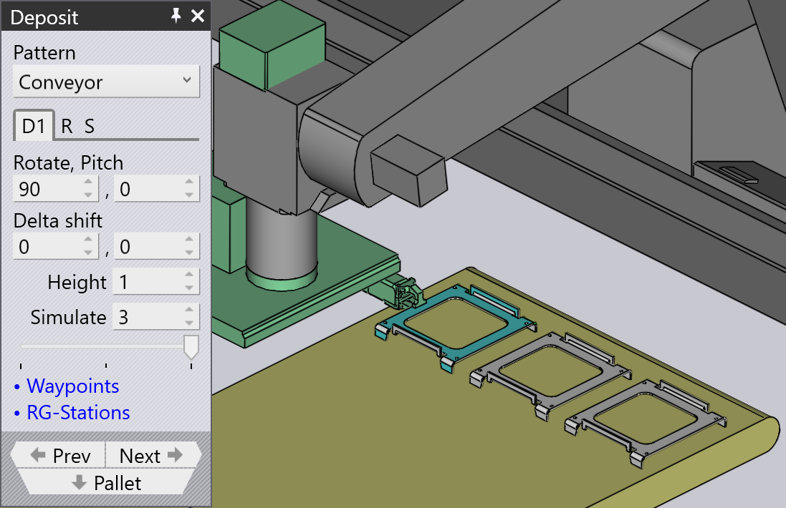

堆放模式類型
Simple Grid
Simple Grid 模式是最常用的模式， 只需將零件堆疊在棧板上的矩形網格中。
當我們使用 Simple Grid 位置時，預設情況下 只有一個堆放位置 D1 可用。

Weave
Weave 模式適用於細長的零件。 D2 層中的零件與 D1 層中的零件呈 90° 放置，如 旁邊所示。


-
Weave 設定控制編織的每一層中並排堆疊的零件數量。
-
Gap 是編織內這些零件之間的間隙
-
然後可以使用 Repeat 頁籤上的 Grid 設定在棧板上多次重複整個 編織堆疊。在此範例中，編織堆疊重複了 兩次（2 欄，1 列）。
-
Repeat 頁籤上的 Gap (Z,X) 設定在 編織重複時使用，並指定編織層之間的間距。
Alternating
Alternating 模式是最靈活的。在此 模式中，您可以控制每個交替層的方向、翻轉和相對偏移。
交替模式提供了更穩定且更緊湊的零件堆疊。
當我們使用 Alternating 模式時，預設情況下堆放位置 D1 和 D2 以及 Regrip R1 可用。
| 調整 D1、D2 中的 Delta shift 值並新增 Regrip 以將零件相互鎖定。 |

Alternating Batch
Alternating Batch 模式類似於 交替模式，但可以批量堆疊組件並 交替層。
Batch shift 用於在批次內沿 Z 和 X 軸移動零件。
Batch count 用於定義每個堆放 D1 中每批的 組件數量，範圍可以從 1 到 50。在下面的範例中， 設定為 5。
Delta shift 用於移動由批次組成的整個堆放 D1 沿 Z 和 X 軸。


使用 Repeat grid (R) 頁籤中的 layers 選項來 定義每個堆放的批次數量。在下面的範例中，設定為 2。

Drop to Basket
此模式用於使用機械夾持器將小零件放入收集籃中。

Conveyor
Conveyor 模式用於將零件堆放在零件 輸送帶上。當細長的零件堆放在輸送帶上時，此選項是必需的。
| 當機械夾爪用於中等大小的零件時，所有其他 模式類型將被停用，無法選擇，除了輸送帶模式。 |

Inclined
Inclined 模式用於垂直堆疊零件 靠著牆壁（或具有側壁的棧板）。
| 此模式並非總是可用。零件必須足夠大才能 實現。對於小零件，機器人無法伸到足夠低的位置來堆疊 靠著牆壁的零件。 |

Inclined pair
此模式類型與 Alternating 模式非常相似， 只是零件作為一對垂直堆放。
在 D1 或 D2 堆放中引入額外的 Regrip 以形成一對。
Auto-pitch 自動確定堆疊的傾斜角度。
Pitch 設定用於調整 堆疊的傾斜角度，Delta shift 值用於在 X 和 R 軸上移動零件以形成更緊湊的堆疊。


Manual
Manual 模式用於以略微不同的方向 放置每層零件。

-
使用 Add 按鈕在最上層的頂部新增新零件。
-
使用 Dn 頁籤旁邊的導覽 按鈕 轉到上一層或下一層。
-
Delta shift、Rotate 和 Pitch 設定可用於調整零件，使其 更好地位於下面的零件上。您還可以使用 Delta shift 並點選 Auto-pitch 以要求 TecZone Bend 計算最佳 傾斜角度。
-
使用 Remove 按鈕移除最上面的零件。
-
建立手動堆疊後，您可以使用 Repeat 頁籤 (R) 上的設定在棧板上重複相同的堆疊。上圖顯示 相同的堆疊重複了 2 欄，1 列，欄之間間隙為 250 mm。
-
Sequence 頁籤 (S) 上的設定可用於控制零件是 by layer 還是 by pile 堆疊。如果使用 逐堆堆疊，第一堆上的所有零件都將完成，然後我們 開始第二堆。